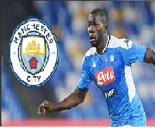

Man City còn cách ‘bom tấn’ 7 triệu euro
Theo tờ Marca, CLB Man City đã gửi đề nghị chiêu mộ Kalidou Koulibaly với giá 63 triệu euro đến Napoli. Tuy nhiên, đội bóng Italia đòi 70 triệu euro. Nếu chịu chi thêm 7 triệu euro nữa, đội bóng chủ sân Etihad sẽ có trung vệ người Senegal.
Juventus muốn có sao Arsenal
Tin từ Calcio Mercato cho hay Lão bà đang cân nhắc khả năng chiêu mộ ngôi sao người Pháp Lacazette. Chân sút này được cho không nằm trong kế hoạch của HLV Arteta và có thể bị Arsenal bán vào hè này.